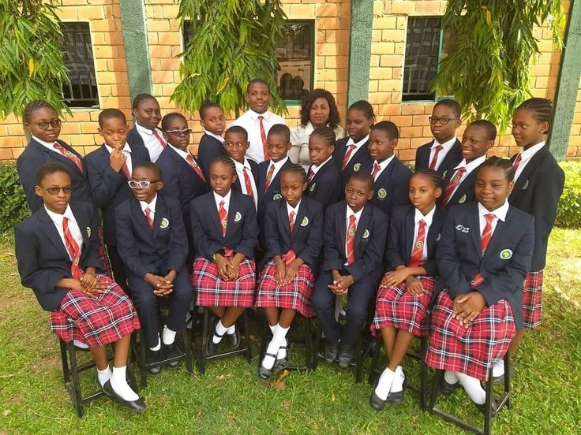

St Maris is a catholic founded high school,located in Entebbe. It is a mixed day and boarding secondary school
Established in 1998 and founded by Kampala Archdiocese by late Cardinal Emmanuel Nsubuga, we are committed to
nurturing students hostically through academic excellence, strong discipline, and Christian moral values. We offer
both O-Level (S1-S4) and A-Level (S5-S6) with Arts and Sciences. We provide an empowering and dynamic EDUCATION
experience that challenges students to grow, explore new horizons and realize their full potential, both with in
and beyond the classroom.
| Discipline Integrity Excellence |

EMAIL: info@stmarishigh.ac.ug| PHONE: +256 708 177 648 /+256 774 091 801| ADDRESS: P.O.BOX 117,ENTEBBE ROAD, ENTEBBE UGANDA